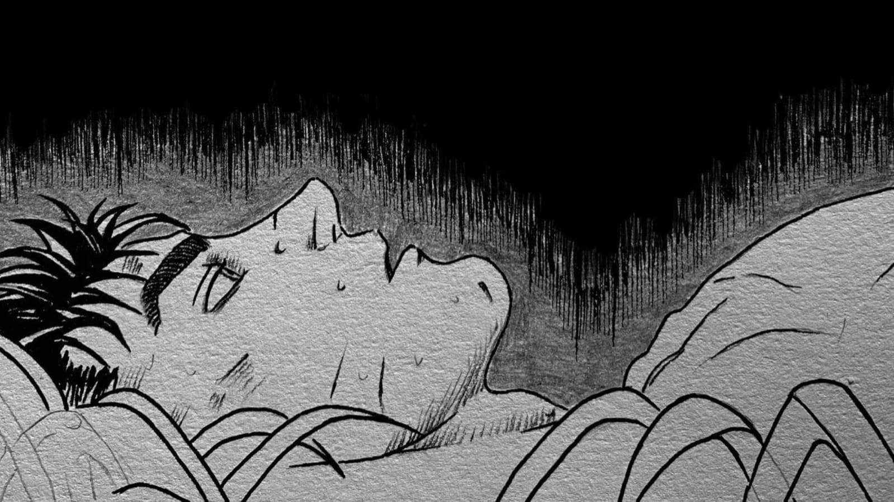

< >
https://error404page.alonne.com
X
Sem Internet
"Oh, não! Você está offline neste momento. Averigue se os periféricos de acesso estão corretamente instalados, ou se algum apóstolo cortou sua conexão rede"
Projetado a partir da estética da obra de Kentaro Miura
Copyright © 2023 Janderson Lima.
Tente:
- Verificar se os cabos de rede não foram devorados
- Impedir que A Ideia do Mal corrompa a rede Wi-Fi novamente
- Executar o Diagnostico de Rede do Berserkows
ERR_INTERNET_DISCONNECTED